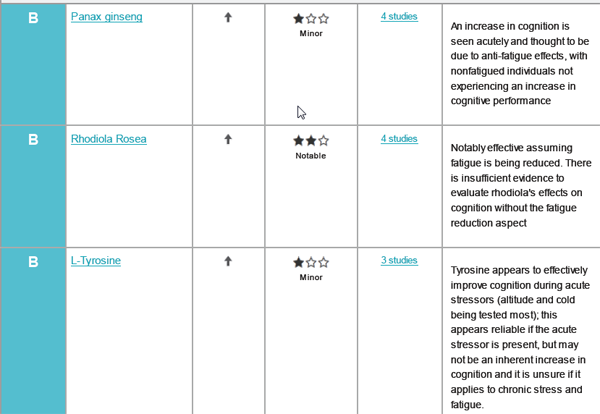

Daryush "Roosh" Valizadeh created ROK in October 2012. You can visit his blog at RooshV.com or follow him on Twitter and Facebook.


Examine is a 1001 page reference book on using supplements based on stated effects such as increasing power output, increasing muscle mass, decreasing blood glucose levels, and so on. It has compiled research on 200 specific supplements to help you decide where the science stands. If a study receives an A or B grade on affecting cortisol, for example, then the supplement did show an increase or decrease in cortisol levels if taken (you can follow the links provided to review the research yourself). It also tells you how significant the research is with descriptions such as “minor,” “notable,” or “strong.”
The beginning of the book gives a broad summary on which supplements you should be taking based on common deficiencies in our diets, particularly Vitamin D and K:
The RDA for vitamin D is roughly 400-800 IU, and the optimal level is roughly 2000 IU minimum. The only people who do not need to concern themselves with vitamin D are those that live within the tropics and have frequent sun exposure with bare skin (wearing a t-shirt and shorts is not enough).
The RDA for vitamin K is roughly 60-120 mcg, and the optimal level is roughly 1000 mcg. This optimal level is mostly the same for both vitamin K1 and K2. It should be noted that while many sources may claim to hit the RDA for vitamin K, they have poor bioavailability – your body is unable to extract the full amount from said foods.
Two additional examples are zinc and magnesium:
Zinc is not usually a concern for non-athletes, but it is excreted in higher amounts when a person sweats to a higher degree. In instances of high mineral excretion from sweating, then zinc supplementation would be useful. Alternatively, oysters provide it in the diet.
Magnesium does not have a really good single-food source aside from some nuts (the high calorie count of which limits how much can be consumed). If most of the foods in your diet contain appreciable levels of magnesium then you can avoid supplementation, but if too much of your diet is lacking magnesium then deficiency is likely.
The next section alphabetically reviews approximately 200 supplements ranging from 1,3-Dimethylamylamine to Ziziphus jujuba. I picked two supplements to review: caffeine and zinc.
Caffeine has many stated effects. The book looks at these different effects and gives them a grade:
The above screenshot shows three effects of caffeine (the book details approximately 20). Studies are grouped within each effect to help determine an overall grade of efficacy.
From the caffeine portion we can conclude that it helps notably on three fronts: power output (i.e. lifting), anaerobic activity (i.e. running), and increasing wakefulness. If you are using caffeine for another purpose, like improving memory, the research does not support it. Drinking an espresso or two before your workout would seem to help more than not.
Zinc is quite popular in these parts for its effects on increasing testosterone. Does the research support this claim? First, let’s examine what the book says about dosage:
Different chelations and forms have different weights and dosing protocols. Zinc is most commonly dosed in either the ‘low dosage’ range of 5-10mg or the ‘high dosage’ range of 25-45mg. The low dosage is a daily preventative that reduces the risk for deficiency, and the high dosage range is the one used to prevent deficiency in persons who have more than just a dietary deficiency working against them (athletes, diabetics, etc.). There is zinc ‘superloading’ protocol using up to 100mg zinc daily, and while this is confirmed to be safe for short term usage (2-4 months) it is well above the tolerable upper limit (TUL) of 40mg and thus not advisable for prolonged supplementation.
Here is a screenshot which shows the summary of zinc’s effect on testosterone:

It appears that zinc supplementation only increases your testosterone if you are definitely zinc deficient or physically active. If you have normal testosterone levels and are not physically active, these is not yet any evidence to show zinc will help you.
I’m not currently on zinc. I feel that my horniness is fine (though lower than 10 years ago) and I do engage in light physical activity. The research suggests that unless there is a genuine problem with my blood testosterone level, the supplement is likely a waste, but then again I do sweat heavily, which is a way that zinc escapes the body. Based on this information, it seems that a low dosage experiment for one month would by a justified call just to observe the effects, but I shouldn’t expect much in the way of concrete change.
The second part of the book may be more useful for some: it lists the health goal you want along with the supplements that show the most promise in achieving that goal. Most goals are revolved around specific biological gains that weightlifters would be most interested in, but it also has more general outcomes. I looked at cognition and insomnia.
Here’s a screenshot with the supplements that offer the most benefit in terms of cognition, though under certain circumstances (when experiencing fatigue or an otherwise depleted state):

This is the first time I’ve heard of rhodiola rosea. Clicking over to its fact sheet, I learned that studies show it has positive effects with fatigue, subjective well-being, cognition, and depression. If I wanted to improve my cognition, rhodiola would be the logical first supplement to try.
I am a light sleeper with problems staying asleep (I’ve been recently using a white noise machine to muffle city noises outside my window). The guide shows that melatonin is the gold standard when it comes to improving sleep, without exhibiting any side effects.
This book isn’t for casual lifters or guys who have no health problems they want to address. It’s more geared for men who can answer yes to the following questions:
1. Are you taking supplements right now? If so, you’ll find this book useful to not only find out whether you should continue taking those supplements but if there are other substances that could be more effective.
2. Do you plan on starting an intense workout program with a goal to greatly increase muscle mass? Instead of relying on anecdotal evidence that you read on the internet, you can use this as a reference guide to develop your own supplementation program.
3. Do you have nagging health concerns that could be treated naturally before pharmaceuticals? Guys in their younger 20’s are probably in tip-top health, but the older guys past their prime would get use from the book’s recommendations.
(Click here to visit the Examine homepage)
I’d like to see a section that details likely deficiencies for men based on age range. For example, it could have a “30-35 years old” section that lists the common biological problems that group is having and which supplements make the most sense in taking. Maybe it’s possible my body is lacking in something which I don’t realize.
Another improvement can be in expanding the introduction. I want to learn more about supplementation in general and even read case studies on how men solved their problems with a custom program. For a reference guide of this length, it would make sense for the author to essentially provide a “supplementation for dummies” intro that is geared to beginners, because right now the book assumes you already have some familiarity with supplements.
To say that this book is thorough is an understatement—I’ve never seen substances analyzed in such a meta manner. The main issue is the price versus the reward. It would be a marginal call for me because I’m not a heavy lifter or have significant health concerns, but identifying just one or two supplements that would improve my life would make its cost worthwhile. It also helps that the author puts out free book updates for buyers that reflect that latest research.
Examine is not a book that you buy and read in one sitting. It’s meant more as a reference guide that you check periodically as your health goals progress. Unless you can answer yes to at least one of the three questions above, it’s safe to skip. Otherwise, I predict you will get value from it.
I’m especially pleased that Examine is involved in sponsoring ROK for May since I can see it offering a direct health benefit to ROK readers who are more inclined to physical self-improvement than the general population. If you’re interested in supplementation, click here to learn more about Examine. ROK readers get a $5 discount.